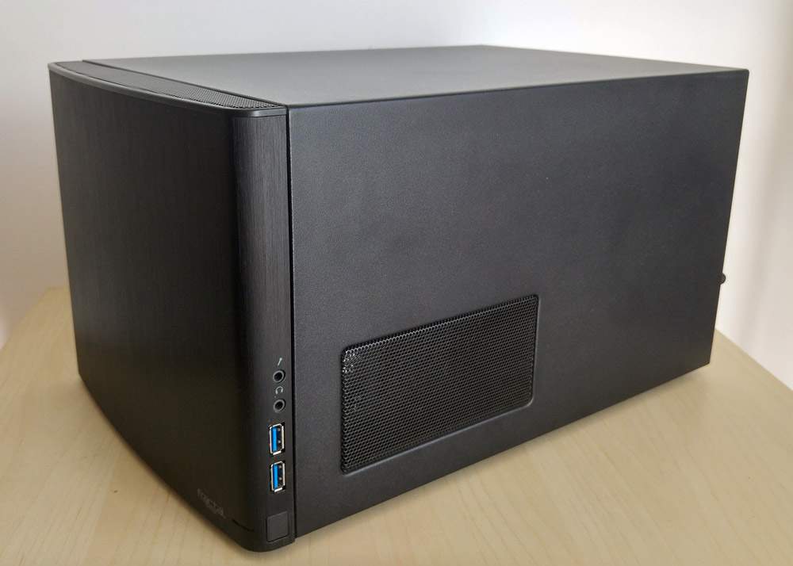

Röviden
ASRock FM2A88X-ITX+ alaplap + AMD A10-5700 (4 magos, 3.4-4.0 GHz) CPU, beépített Radeon 7660D GPU
8GB Kingston HyperX RAM
1 SSD (120GB) + 1 HDD (2TB) + hely további 4 db 3,5"os HDD-nek
Beépített 2.4/5GHz Wifi és Bluetooth 4.0
Halk tápegység, halk CPU és ház hűtők: az egész PC minél halkabb működésre lett összerakva
Fractal Design Node 304 ház + IR érzékelő és távirányító
Alaplap: ASRock FM2A88X-ITX+
CPU: AMD A10-5700 + Cooler Master Hyper TX3 EVO hűtő, Noctua NF B9 PWM halk ventilátorral
RAM: Kingston 8GB HyperX (KHX1600C9D3K2/8GX)
SSD: Kingston 120GB (SV300S37A/120G)
HDD: 2x Western Digital Green 1TB (WD10EZRX) + 1x Western Digital AV 2TB (WD20EURS)
Táp: Seasonic S12 II 430W
Ház: Fractal Design Node 304, black
Alaplap
ASRock FM2A88X-ITX+
http://www.asrock.com/mb/AMD/FM2A88X-ITX+/index.hu.asp
támogatott CPU: AMD Socket FM2+ 95W / FM2 100W
beépített Wifi&Bluetooth: 1 x 2T2R Dual-Band WiFi 802.11n + BT v4.0 Module + 1 x ASRock WiFi 2.4/5GHz Antenna
6x SATA3
1x eSATA
4x USB 3.0
8x USB 2.0
1x PCIe 3.0 x16
1x Half/Full (mSATA) mini-PCIe
HDMI-In port
HDMI, DVI, VGA csatlakozó
TI® NE5532 Premium Headset Amplifier
CPU
AMD A10-5700
http://www.cpu-world.com/CPUs/Bulldozer/AMD-A10-Series%20A10-5700.html
http://www.coolermaster.com/cooling/cpu-air-cooler/hyper-tx3-evo/
http://noctua.at/en/nf-b9-pwm/specification
4 magos, 3.4-4.0 GHz
beépített GPU: Radeon HD 7660D
AMD Socket FM2
támogatott RAM: max. DDR3-1866 MHz
halk CPU hűtő: Cooler Master Hyper TX3 EVO + Noctua NF B9 PWM
RAM
Kingston 8GB HyperX
https://www.kingston.com/datasheets/khx1600c9d3k2_8gx.pdf
2x4GB kit (KHX1600C9D3K2/8GX)
DDR3-1600 MHz
SSD
Kingston SSDNow V300
http://www.kingston.com/us/ssd/consumer/sv300s3
120 GB (SV300S37A/120G)
HDD
Western Digital AV 2TB
https://support.wdc.com/product.aspx?ID=505&lang=en
2 TB (WD20EURS), 5400 rpm
Állapot: 100/100
Részletesebben: HD Sentinel report fülön
Tápegység
Seasonic S12 II
https://seasonic.com/product/s12ii-430/
430W teljesítmény
80%+ hatékonyság
Halk működés (22 dBA)
Ház
Fractal Design Node 304
Teszt
http://www.fractal-design.com/home/product/cases/node-series/node-304-black
6x 3,5" HDD hely
2x USB 3.0 előlapi csatlakozó
2x halk 92 mm ventilátor
1x halk 120 mm ventilátor
3 fokozatban szabályozható fordulatszám
Alaplap méret: Mini ITX, Mini DTX
Cserélhető, tisztítható szűrő a tápegységhez és a ház másik oldalán
MCE távirányítóról vezérelhető a PC, még a ki/be kapcsolás is (közvetlenül az alaplap power jumperjához is hozzá van kötve az IR érzékelő)
Ház mérete: 250 x 210 x 374 mm